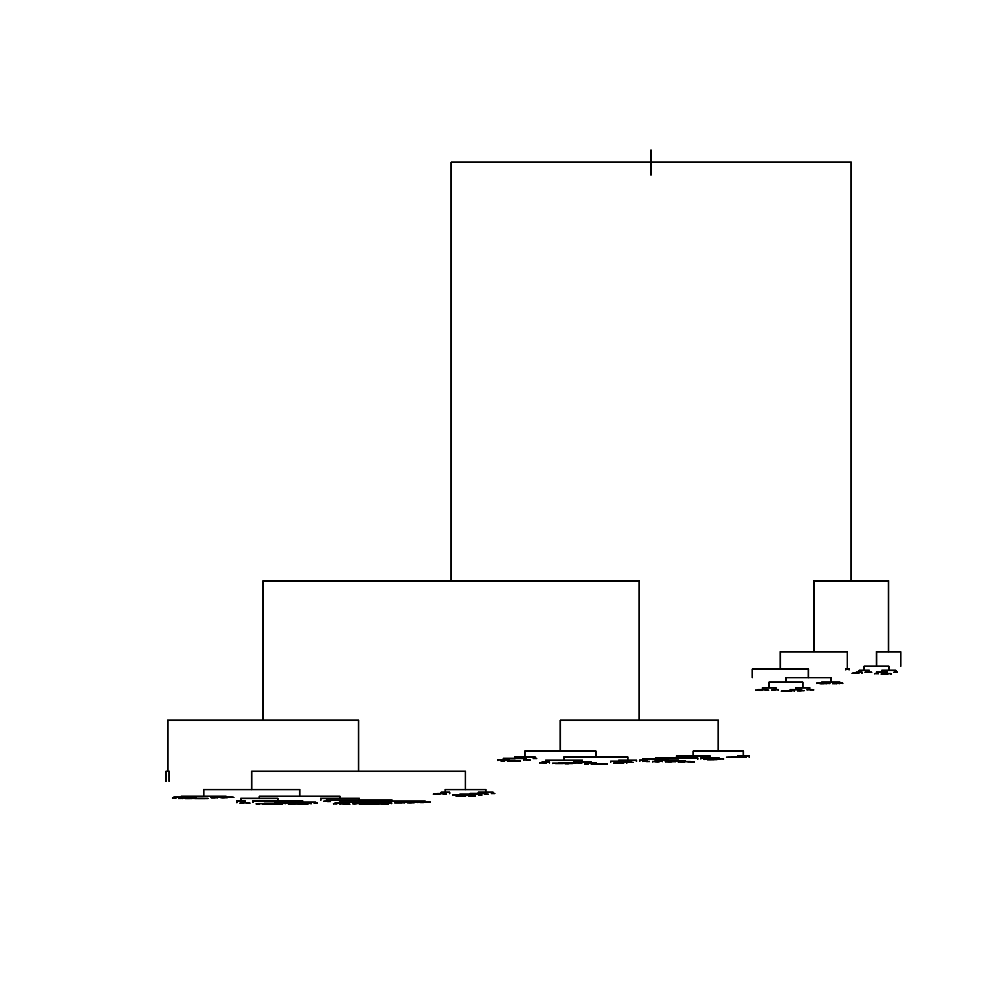
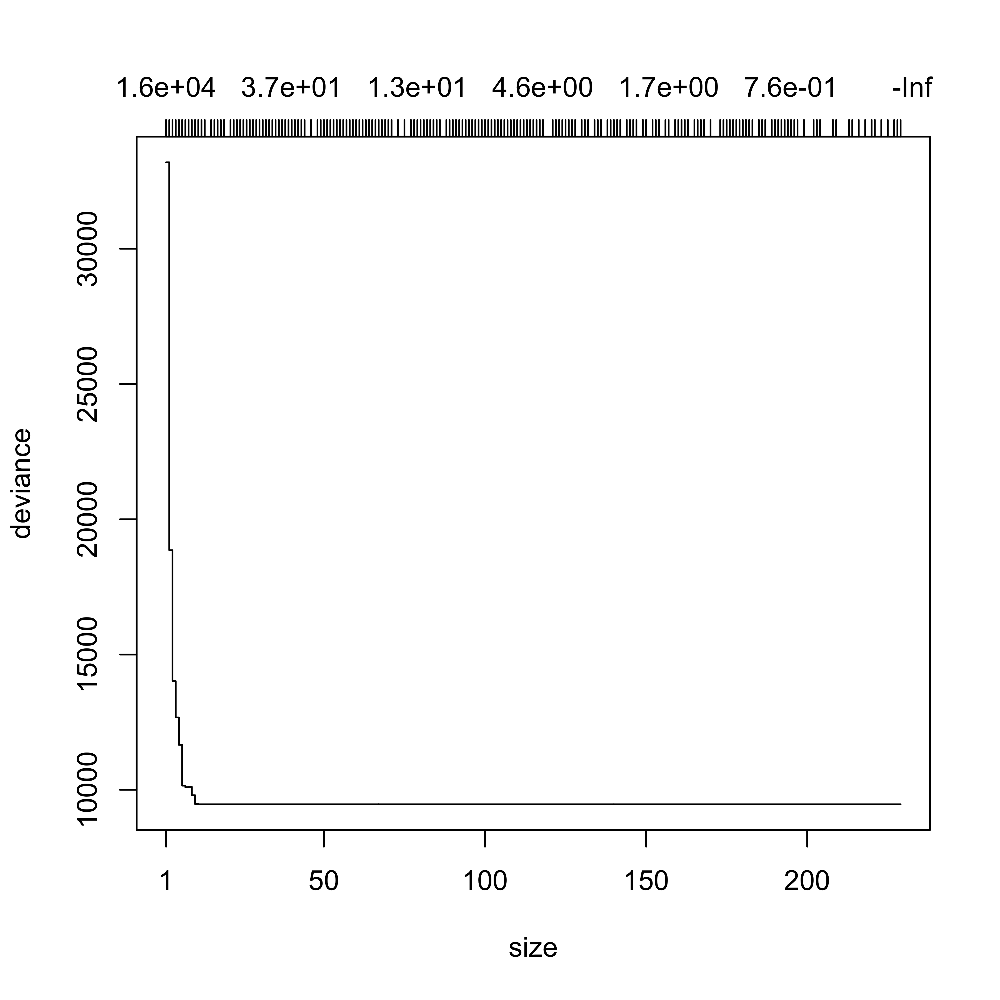

library(rpart)
data(Boston, package = "MASS")
# split data into a training and
# a test set
set.seed(123456)
n <- nrow(Boston)
ii <- sample(n, floor(n / 4))
dat.te <- Boston[ii, ]
dat.tr <- Boston[-ii, ]
myc <- rpart.control(minsplit = 2, cp = 1e-5, xval = 10)
set.seed(123456)
bos.to <- rpart(medv ~ .,
data = dat.tr, method = "anova",
control = myc
)
plot(bos.to, compress = TRUE) # type='proportional')10 Pruning regression trees with rpart
Important note: As discussed in class, the K-fold CV methodology implemented in the package rpart seems to consider a sequence of trees (or, equivalently, of complexity parameters) based on the full training set. For more details refer to the corresponding documentation: pages 12 and ff of the package vignette, which can be accessed from R using the command vignette('longintro', package='rpart'). For an alternative implementation of CV-based pruning, please see also the Section “Pruning regression trees with tree” below.
The stopping criteria generally used when fitting regression trees do not take into account explicitly the complexity of the tree. Hence, we may end up with either an overfitting tree, or a very simple one, which typically results in a decline in the quality of the corresponding predictions. As discussed in class, one solution is to purposedly grow / train a very large overfitting tree, and then prune it. One can also estimate the corresponding MSPE of each tree in the prunning sequence and choose an optimal one. The function rpart implements this approach, and we illustrate it below.
We force rpart to build a very large tree via the arguments of the function rpart.control. At the same time, to obtain a good picture of the evolution of MSPE for different subtrees, we set the smallest complexity parameter to be considered by the cross-validation experiment to a very low value (here we use 1e-8).
Not surprisingly, the predictions of this large tree are not very good:
# predictions are poor, unsurprisingly
pr.to <- predict(bos.to, newdata = dat.te, type = "vector")
with(dat.te, mean((medv - pr.to)^2))
#> [1] 19.22826To prune we explore the CP table returned in the rpart object to find the value of the complexity parameter with optimal estimated prediction error. The estimated prediction error of each subtree (corresponding to each value of CP) is contained in the column xerror, and the associated standard deviation is in column xstd. We would like to find the value of CP that yields a corresponding pruned tree with smallest estimated prediction error. The function printcp shows the CP table corresponding to an rpart object:
printcp(bos.to)
#>
#> Regression tree:
#> rpart(formula = medv ~ ., data = dat.tr, method = "anova", control = myc)
#>
#> Variables actually used in tree construction:
#> [1] age black chas crim dis indus lstat nox ptratio
#> [10] rad rm tax zn
#>
#> Root node error: 32946/380 = 86.7
#>
#> n= 380
#>
#> CP nsplit rel error xerror xstd
#> 1 4.7150e-01 0 1.00000000 1.00363 0.094075
#> 2 1.5701e-01 1 0.52850063 0.60388 0.063381
#> 3 7.9798e-02 2 0.37149536 0.40412 0.050267
#> 4 5.7540e-02 3 0.29169700 0.34109 0.048146
#> 5 3.4802e-02 4 0.23415748 0.35907 0.054713
#> 6 2.0424e-02 5 0.19935554 0.27486 0.041559
#> 7 1.9408e-02 6 0.17893128 0.26826 0.041522
#> 8 1.6414e-02 7 0.15952348 0.27163 0.041861
#> 9 1.1118e-02 8 0.14310945 0.26680 0.041809
#> 10 9.6449e-03 9 0.13199106 0.26576 0.048628
#> 11 7.7292e-03 10 0.12234619 0.26166 0.047488
#> 12 6.5545e-03 11 0.11461702 0.26243 0.047476
#> 13 5.7344e-03 12 0.10806249 0.24154 0.044548
#> 14 5.3955e-03 14 0.09659371 0.24499 0.043512
#> 15 4.6018e-03 15 0.09119826 0.24284 0.043821
#> 16 3.7390e-03 16 0.08659643 0.24439 0.044009
#> 17 3.2170e-03 17 0.08285743 0.24188 0.044019
#> 18 2.5445e-03 18 0.07964044 0.23957 0.043896
#> 19 2.3205e-03 20 0.07455137 0.24288 0.043992
#> 20 2.1485e-03 21 0.07223089 0.23905 0.043463
#> 21 2.1316e-03 22 0.07008242 0.24546 0.044444
#> 22 2.0477e-03 23 0.06795084 0.24556 0.044447
#> 23 2.0283e-03 24 0.06590313 0.24493 0.044439
#> 24 1.9878e-03 25 0.06387482 0.24448 0.044442
#> 25 1.9781e-03 26 0.06188702 0.24495 0.044438
#> 26 1.9686e-03 27 0.05990894 0.24495 0.044438
#> 27 1.6400e-03 28 0.05794032 0.24296 0.044425
#> 28 1.6357e-03 29 0.05630030 0.24257 0.044401
#> 29 1.6212e-03 30 0.05466464 0.24257 0.044401
#> 30 1.5386e-03 31 0.05304346 0.24272 0.044402
#> 31 1.4205e-03 32 0.05150482 0.24609 0.044437
#> 32 1.3390e-03 33 0.05008431 0.24671 0.044485
#> 33 1.2731e-03 34 0.04874534 0.24823 0.044688
#> 34 1.2294e-03 35 0.04747228 0.24985 0.044671
#> 35 1.1693e-03 36 0.04624285 0.25214 0.044656
#> 36 1.1587e-03 37 0.04507358 0.25609 0.044764
#> 37 1.1306e-03 38 0.04391487 0.25484 0.044738
#> 38 1.1235e-03 39 0.04278422 0.25484 0.044738
#> 39 1.1117e-03 40 0.04166071 0.25420 0.044733
#> 40 1.0183e-03 41 0.04054904 0.25240 0.044720
#> 41 1.0016e-03 42 0.03953071 0.25440 0.044772
#> 42 9.8001e-04 43 0.03852907 0.25480 0.044799
#> 43 9.5959e-04 45 0.03656906 0.25607 0.044791
#> 44 9.5612e-04 47 0.03464987 0.25828 0.044779
#> 45 8.9091e-04 48 0.03369375 0.26231 0.045282
#> 46 8.8600e-04 49 0.03280284 0.25879 0.044930
#> 47 8.7103e-04 50 0.03191684 0.25836 0.044925
#> 48 8.4075e-04 51 0.03104580 0.25901 0.044895
#> 49 8.3105e-04 52 0.03020505 0.25848 0.044897
#> 50 8.2287e-04 53 0.02937400 0.25882 0.044924
#> 51 8.2159e-04 54 0.02855113 0.25893 0.044922
#> 52 7.9802e-04 55 0.02772954 0.25984 0.044889
#> 53 7.7379e-04 56 0.02693152 0.26006 0.044887
#> 54 7.6674e-04 57 0.02615772 0.26006 0.044887
#> 55 7.4051e-04 58 0.02539098 0.26070 0.044591
#> 56 6.5174e-04 59 0.02465047 0.26100 0.044598
#> 57 6.4506e-04 60 0.02399873 0.26196 0.044601
#> 58 6.1748e-04 61 0.02335367 0.26243 0.044616
#> 59 5.7918e-04 62 0.02273620 0.26455 0.044635
#> 60 5.6590e-04 63 0.02215702 0.26531 0.044647
#> 61 5.3958e-04 64 0.02159112 0.26456 0.044653
#> 62 5.2778e-04 65 0.02105154 0.26771 0.045102
#> 63 5.2595e-04 66 0.02052376 0.26878 0.045150
#> 64 4.9608e-04 67 0.01999781 0.26887 0.045148
#> 65 4.9581e-04 68 0.01950173 0.26876 0.045137
#> 66 4.6477e-04 69 0.01900592 0.26899 0.045164
#> 67 4.5562e-04 70 0.01854115 0.26883 0.045164
#> 68 4.3208e-04 72 0.01762991 0.26818 0.045157
#> 69 4.2934e-04 74 0.01676575 0.26768 0.045149
#> 70 4.0512e-04 76 0.01590708 0.26831 0.045173
#> 71 4.0437e-04 77 0.01550196 0.26865 0.045176
#> 72 3.8959e-04 78 0.01509758 0.26928 0.045191
#> 73 3.3745e-04 79 0.01470799 0.27223 0.045179
#> 74 3.2839e-04 80 0.01437054 0.27232 0.045055
#> 75 3.2113e-04 81 0.01404215 0.27316 0.045075
#> 76 3.1358e-04 82 0.01372102 0.27216 0.044977
#> 77 3.0960e-04 83 0.01340743 0.27273 0.045001
#> 78 2.8639e-04 84 0.01309783 0.27342 0.045009
#> 79 2.7607e-04 85 0.01281145 0.27447 0.045074
#> 80 2.7189e-04 87 0.01225931 0.27379 0.045071
#> 81 2.6958e-04 88 0.01198742 0.27385 0.045067
#> 82 2.6552e-04 89 0.01171784 0.27361 0.045096
#> 83 2.6115e-04 90 0.01145232 0.27350 0.045093
#> 84 2.5749e-04 91 0.01119117 0.27350 0.045093
#> 85 2.5578e-04 92 0.01093368 0.27280 0.045100
#> 86 2.5257e-04 93 0.01067790 0.27277 0.045101
#> 87 2.2556e-04 94 0.01042532 0.27385 0.045136
#> 88 2.2386e-04 95 0.01019976 0.27266 0.045131
#> 89 2.1854e-04 96 0.00997590 0.27266 0.045130
#> 90 2.1012e-04 97 0.00975736 0.27363 0.045146
#> 91 2.0946e-04 98 0.00954723 0.27444 0.045161
#> 92 2.0776e-04 99 0.00933778 0.27444 0.045161
#> 93 2.0488e-04 100 0.00913001 0.27230 0.044975
#> 94 2.0296e-04 101 0.00892513 0.27225 0.044975
#> 95 2.0035e-04 102 0.00872217 0.27223 0.044976
#> 96 1.9446e-04 103 0.00852182 0.27232 0.044975
#> 97 1.9166e-04 104 0.00832736 0.27133 0.044929
#> 98 1.8824e-04 105 0.00813570 0.27103 0.044910
#> 99 1.8713e-04 106 0.00794747 0.27072 0.044913
#> 100 1.7808e-04 107 0.00776033 0.26983 0.044895
#> 101 1.7610e-04 108 0.00758225 0.27000 0.044893
#> 102 1.7325e-04 109 0.00740615 0.26984 0.044895
#> 103 1.7018e-04 110 0.00723291 0.26968 0.044896
#> 104 1.6527e-04 111 0.00706273 0.27027 0.044898
#> 105 1.5789e-04 112 0.00689746 0.27057 0.044895
#> 106 1.5735e-04 113 0.00673957 0.27046 0.044898
#> 107 1.4751e-04 114 0.00658222 0.27066 0.044897
#> 108 1.4632e-04 115 0.00643470 0.27055 0.044899
#> 109 1.3986e-04 116 0.00628839 0.27039 0.044902
#> 110 1.3925e-04 117 0.00614852 0.27111 0.044899
#> 111 1.3479e-04 120 0.00573078 0.27113 0.044898
#> 112 1.3357e-04 121 0.00559599 0.27084 0.044895
#> 113 1.3245e-04 122 0.00546242 0.27097 0.044894
#> 114 1.3171e-04 123 0.00532997 0.27101 0.044893
#> 115 1.2728e-04 124 0.00519826 0.27137 0.044889
#> 116 1.2691e-04 125 0.00507098 0.27085 0.044877
#> 117 1.2493e-04 126 0.00494407 0.27066 0.044880
#> 118 1.1699e-04 127 0.00481913 0.27148 0.044907
#> 119 1.1655e-04 129 0.00458516 0.27168 0.044909
#> 120 1.1542e-04 130 0.00446861 0.27209 0.044907
#> 121 1.0244e-04 131 0.00435319 0.27047 0.044874
#> 122 1.0244e-04 132 0.00425075 0.27085 0.044872
#> 123 1.0205e-04 133 0.00414831 0.27085 0.044872
#> 124 9.8401e-05 134 0.00404627 0.27127 0.044871
#> 125 9.7938e-05 135 0.00394786 0.27064 0.044858
#> 126 9.7938e-05 136 0.00384993 0.27069 0.044857
#> 127 9.7128e-05 137 0.00375199 0.27069 0.044857
#> 128 9.4118e-05 138 0.00365486 0.27006 0.044763
#> 129 9.3663e-05 139 0.00356074 0.26991 0.044771
#> 130 9.3243e-05 140 0.00346708 0.26991 0.044771
#> 131 8.2635e-05 141 0.00337384 0.27063 0.044771
#> 132 8.2635e-05 142 0.00329120 0.26996 0.044773
#> 133 7.3547e-05 143 0.00320857 0.27017 0.044774
#> 134 7.3049e-05 144 0.00313502 0.27061 0.044796
#> 135 6.8395e-05 145 0.00306197 0.27067 0.044795
#> 136 6.6928e-05 146 0.00299358 0.27005 0.044771
#> 137 6.6928e-05 147 0.00292665 0.27005 0.044773
#> 138 6.5562e-05 148 0.00285972 0.27007 0.044773
#> 139 5.8916e-05 149 0.00279416 0.27023 0.044772
#> 140 5.6726e-05 151 0.00267633 0.27085 0.044768
#> 141 5.6471e-05 152 0.00261960 0.27079 0.044774
#> 142 5.5090e-05 153 0.00256313 0.27079 0.044774
#> 143 5.4263e-05 155 0.00245295 0.27081 0.044773
#> 144 5.1296e-05 156 0.00239869 0.27094 0.044772
#> 145 5.1296e-05 157 0.00234739 0.27146 0.044770
#> 146 5.1053e-05 158 0.00229610 0.27146 0.044770
#> 147 5.1003e-05 159 0.00224504 0.27146 0.044770
#> 148 4.9576e-05 160 0.00219404 0.27117 0.044769
#> 149 4.9308e-05 161 0.00214446 0.27118 0.044768
#> 150 4.8615e-05 162 0.00209516 0.27114 0.044769
#> 151 4.8615e-05 163 0.00204654 0.27154 0.044767
#> 152 4.5354e-05 164 0.00199793 0.27154 0.044767
#> 153 4.2544e-05 165 0.00195257 0.27175 0.044768
#> 154 4.2519e-05 166 0.00191003 0.27179 0.044772
#> 155 4.1488e-05 167 0.00186751 0.27179 0.044772
#> 156 4.0759e-05 169 0.00178453 0.27173 0.044772
#> 157 4.0675e-05 172 0.00166226 0.27164 0.044773
#> 158 4.0141e-05 173 0.00162158 0.27112 0.044756
#> 159 3.9661e-05 174 0.00158144 0.27111 0.044756
#> 160 3.9133e-05 175 0.00154178 0.27111 0.044756
#> 161 3.8851e-05 176 0.00150265 0.27118 0.044755
#> 162 3.6878e-05 177 0.00146380 0.27161 0.044763
#> 163 3.6524e-05 178 0.00142692 0.27163 0.044763
#> 164 3.4197e-05 179 0.00139039 0.27160 0.044763
#> 165 3.2895e-05 180 0.00135620 0.27153 0.044756
#> 166 3.2781e-05 181 0.00132330 0.27172 0.044754
#> 167 3.2438e-05 182 0.00129052 0.27183 0.044753
#> 168 2.9746e-05 184 0.00122564 0.27187 0.044752
#> 169 2.9503e-05 185 0.00119590 0.27228 0.044763
#> 170 2.9381e-05 186 0.00116639 0.27228 0.044763
#> 171 2.9381e-05 187 0.00113701 0.27228 0.044763
#> 172 2.9139e-05 188 0.00110763 0.27228 0.044763
#> 173 2.8420e-05 189 0.00107849 0.27255 0.044764
#> 174 2.6761e-05 190 0.00105007 0.27232 0.044759
#> 175 2.4484e-05 191 0.00102331 0.27260 0.044758
#> 176 2.4282e-05 192 0.00099883 0.27181 0.044537
#> 177 2.3311e-05 193 0.00097455 0.27213 0.044538
#> 178 2.3083e-05 194 0.00095124 0.27216 0.044537
#> 179 2.2309e-05 195 0.00092815 0.27216 0.044537
#> 180 2.1930e-05 196 0.00090584 0.27171 0.044505
#> 181 2.1854e-05 198 0.00086198 0.27169 0.044508
#> 182 2.1854e-05 199 0.00084013 0.27169 0.044508
#> 183 2.1409e-05 201 0.00079642 0.27169 0.044508
#> 184 2.0325e-05 202 0.00077501 0.27181 0.044510
#> 185 2.0235e-05 203 0.00075469 0.27120 0.044502
#> 186 2.0235e-05 204 0.00073445 0.27120 0.044502
#> 187 2.0235e-05 205 0.00071422 0.27120 0.044502
#> 188 2.0235e-05 206 0.00069398 0.27120 0.044502
#> 189 1.8439e-05 207 0.00067375 0.27120 0.044502
#> 190 1.8363e-05 208 0.00065531 0.27111 0.044501
#> 191 1.8363e-05 210 0.00061858 0.27113 0.044501
#> 192 1.8363e-05 211 0.00060022 0.27113 0.044501
#> 193 1.8262e-05 212 0.00058185 0.27113 0.044501
#> 194 1.7099e-05 213 0.00056359 0.27096 0.044498
#> 195 1.7099e-05 214 0.00054649 0.27094 0.044499
#> 196 1.6390e-05 215 0.00052940 0.27108 0.044499
#> 197 1.6390e-05 216 0.00051300 0.27106 0.044500
#> 198 1.4620e-05 217 0.00049661 0.27091 0.044504
#> 199 1.4620e-05 218 0.00048199 0.27104 0.044503
#> 200 1.4610e-05 219 0.00046737 0.27104 0.044503
#> 201 1.3380e-05 220 0.00045276 0.27124 0.044505
#> 202 1.3380e-05 221 0.00043938 0.27143 0.044517
#> 203 1.2950e-05 222 0.00042600 0.27144 0.044517
#> 204 1.2950e-05 223 0.00041305 0.27144 0.044517
#> 205 1.1382e-05 224 0.00040010 0.27168 0.044520
#> 206 1.1382e-05 225 0.00038872 0.27179 0.044520
#> 207 1.0927e-05 226 0.00037734 0.27176 0.044520
#> 208 1.0118e-05 227 0.00036641 0.27189 0.044526
#> 209 1.0118e-05 228 0.00035629 0.27189 0.044526
#> 210 1.0000e-05 229 0.00034618 0.27189 0.044526It is probably better and easier to find this optimal value programatically as follows:
(b <- bos.to$cptable[which.min(bos.to$cptable[, "xerror"]), "CP"])
#> [1] 0.00214847We can now use the function prune on the rpart object setting the complexity parameter to the estimated optimal value found above:
bos.t3 <- prune(bos.to, cp = b)This is how the optimally pruned tree looks:
plot(bos.t3, uniform = FALSE, margin = 0.01)
text(bos.t3, pretty = FALSE)
Finally, we can check the predictions of the pruned tree on the test set:
# predictions are better
pr.t3 <- predict(bos.t3, newdata = dat.te, type = "vector")
with(dat.te, mean((medv - pr.t3)^2))
#> [1] 16.59113Again, it would be a very good exercise for you to compare the MSPE of the pruned tree with that of several of the alternative methods we have seen in class so far, without using a training / test split.
10.1 Pruning regression trees with tree
The implementation of trees in the R package tree follows the original CV-based pruning strategy, as discussed in Section 3.4 of the book
Breiman, L., Friedman, J.H., Olshen, R.A. and Stone, C.J. (1984). Classification and regression trees. Chapman & Hall.
or Section 7.2 of:
Ripley, Brian D. (1996). Pattern recognition and neural networks. Cambridge University Press
Both books are available in electronic form from the UBC Library: Breiman et al. and Ripley, B.D..
We now use the function tree::tree() to fit the same regression tree as above. Note that the default stopping criteria in this implementation of regression trees is different from the one in rpart::rpart(), hence to obtain the same results as above we need to modify the default stopping criteria using the argument control:
library(tree)
bos.t2 <- tree(medv ~ ., data = dat.tr, control = tree.control(nobs = nrow(dat.tr), mincut = 6, minsize = 20))We plot the resulting tree
plot(bos.t2)
text(bos.t2)As discussed before, we now fit a very large tree, which will be pruned later:
set.seed(123)
bos.to2 <- tree(medv ~ .,
data = dat.tr,
control = tree.control(nobs = nrow(dat.tr), mincut = 1, minsize = 2, mindev = 1e-5)
)
plot(bos.to2)
We now use the function tree:cv.tree() to estimate the MSPE of the subtrees of bos.to2, using 5-fold CV, and plot the estimated MSPE (here labeled as “deviance”) as a function of the complexity parameter (or, equivalently, the size of the tree):
set.seed(123)
tt <- cv.tree(bos.to2, K = 5)
plot(tt)
Finally, we use the function prune.tree to prune the larger tree at the “optimal” size, as estimated by cv.tree above:
bos.pr2 <- prune.tree(bos.to2, k = tt$k[max(which(tt$dev == min(tt$dev)))])
plot(bos.pr2)
text(bos.pr2)
Compare this pruned tree with the one obtained with the regression trees implementation in rpart. In particular, we can compare the predictions of this other pruned tree on the test set:
# predictions are worse than the rpart-pruned tree
pr.tree <- predict(bos.pr2, newdata = dat.te, type = "vector")
with(dat.te, mean((medv - pr.tree)^2))
#> [1] 15.7194Note that the predictions of the tree pruned with the tree package seem to be better than those of the tree pruned with the rpart package. Does this mean that rpart gives trees with worse predictions than tree for data coming from the process than generated our training set? Or could it all be an artifact of the specific test set we used? Can you think of an experiment to check this? Again, it would be a very good exercise for you to check which fit (tree or rpart) gives pruned trees with better prediction properties in this case.
10.2 Instability of regression trees
Trees can be rather unstable, in the sense that small changes in the training data set may result in relatively large differences in the fitted trees. As a simple illustration we randomly split the Boston data used before into two halves and fit a regression tree to each portion. We then display both trees.
# Instability of trees...
library(rpart)
data(Boston, package = "MASS")
set.seed(123)
n <- nrow(Boston)
ii <- sample(n, floor(n / 2))
dat.t1 <- Boston[-ii, ]
bos.t1 <- rpart(medv ~ ., data = dat.t1, method = "anova")
plot(bos.t1, uniform = FALSE, margin = 0.01)
text(bos.t1, pretty = TRUE, cex = .8)dat.t2 <- Boston[ii, ]
bos.t2 <- rpart(medv ~ ., data = dat.t2, method = "anova")
plot(bos.t2, uniform = FALSE, margin = 0.01)
text(bos.t2, pretty = TRUE, cex = .8)Although we would expect both random halves of the same (moderately large) training set to beat least qualitatively similar, Note that the two trees are rather different. To compare with a more stable predictor, we fit a linear regression model to each half, and look at the two sets of estimated coefficients side by side:
# bos.lmf <- lm(medv ~ ., data=Boston)
bos.lm1 <- lm(medv ~ ., data = dat.t1)
bos.lm2 <- lm(medv ~ ., data = dat.t2)
cbind(
round(coef(bos.lm1), 2),
round(coef(bos.lm2), 2)
)
#> [,1] [,2]
#> (Intercept) 35.47 32.35
#> crim -0.12 -0.09
#> zn 0.04 0.05
#> indus 0.01 0.03
#> chas 0.90 3.98
#> nox -23.90 -12.33
#> rm 5.01 3.39
#> age -0.01 0.00
#> dis -1.59 -1.41
#> rad 0.33 0.28
#> tax -0.01 -0.01
#> ptratio -1.12 -0.72
#> black 0.01 0.01
#> lstat -0.31 -0.66Note that most of the estimated regression coefficients are similar, and all of them are at least qualitatively comparable.